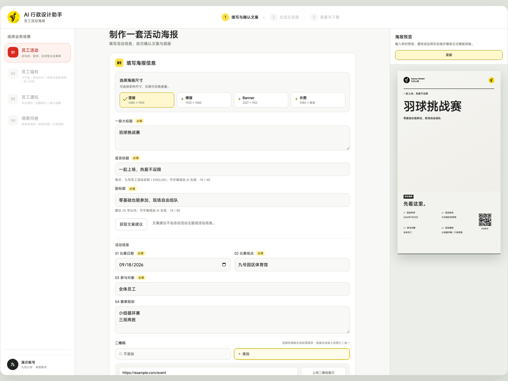
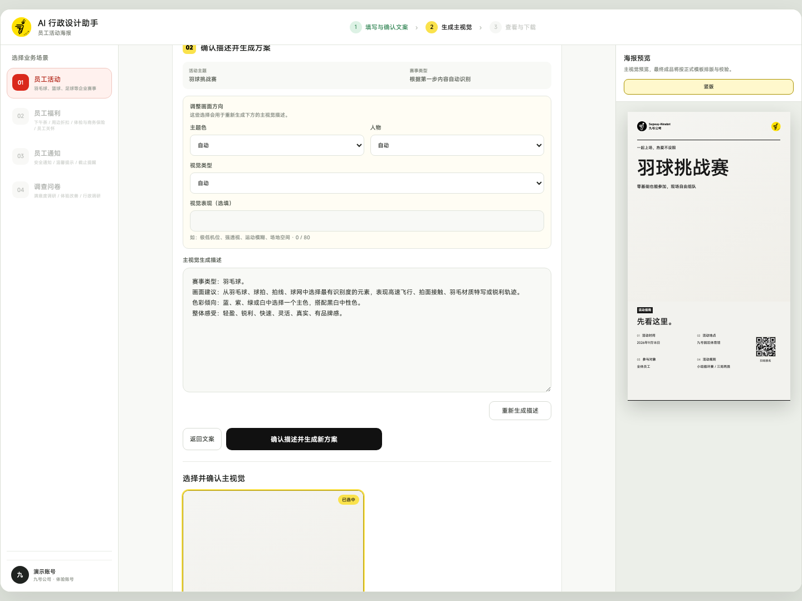
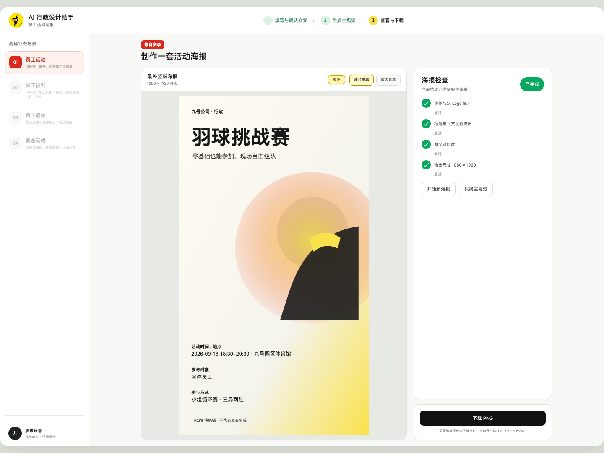

From an event brief to reviewable, branded materials.
At Segway-Ninebot, I translated administrative needs and brand constraints into a usable AI workflow, then built the full-stack demo with AI assistance.
About 10 minutes per poster, measuredAgainst the previous 60-minute baseline, about 83% less production time
Initial measurement · sample and timing scope still to confirmDeployed demo · Initial production timing
Actual demo output · Sep 2026 · Demonstration event, not a publication record30-second overview / Context & role
One internal event needs more than one poster.
An event may need portrait, landscape, banner and long-form materials, while dates, locations and brand expression must stay consistent. The design challenge was to let administrative colleagues work within clear scenarios and rules while retaining control over content and visuals. The current slice focuses on employee events; other administrative scenarios remain future scope.
My contribution
I helped clarify business needs, translated shared information and template constraints into a workflow, designed the interaction, and used AI assistance to implement the frontend, backend, model calls and image-export pipeline.
Collaborative inputs
Business and brand-design colleagues supplied scenarios, formats, brand foundations and template direction. My contribution was to turn those inputs into a usable, inspectable product. I do not claim sole authorship of the brand identity or visual system.
02 / Initial timing and potential impact
Repetition and revision rounds are a measurable load.
Administrative poster demand is estimated at about 20 per month, or 240 per year. The previous process took about 60 minutes per poster and involved 3–4 revision rounds on average; the reported timing for the AI Zhihui workflow is about 10 minutes per poster. Comparing the two figures suggests a difference of about 50 minutes per poster.
Single-poster production time (minutes)
Previous60
AI Zhihui10
Difference per posterAbout 50 min
Production timeAbout 83.3% less
If all 240 annual posters are eligible for and produced through this workflow, the projected production-time saving is about 200 hours per year. That annual figure is a scenario estimate, not a realised saving.
These figures derive from the existing 60-minute baseline and the reported 10-minute timing; this is not a controlled comparison. Timing scope, applicability, actual adoption and the revision rounds of the new workflow remain to be verified, so the time difference is not converted into a financial saving.
03 / Product workflow
Confirm the content. Choose the visual. Review the output.
End-to-end has a specific meaning here: from event information to an exported PNG. It includes human confirmation and selection, and stops before event publication or communication outcomes. Each stage makes the next decision explicit.
01 / The user owns event factsConfirm the copy
02 / The visual direction stays editableChoose the visual
03 / Inspect the composed outputReview and download
Who owns which step · people / model / rules / brand input
01Request raised
The business team states the event and which formats are needed.
Business team
02Information confirmed
Event facts and copy trade-offs are confirmed by a person.
Business teamAI suggests
03Key visual chosen
The model generates candidates; a person selects one.
AI generatesPerson selects
04Template composition
Date, venue, hierarchy and brand marks are guaranteed by rules.
System rulesBrand input
05Check and download
Output checks separate warnings, failures and acceptance.
System rulesPerson accepts

Event facts and copy share a workspace, with a preview showing how fields become a poster.View full image ↗

The visual description is editable. Generated options remain selectable before formal composition.View full image ↗

The result places the complete poster beside checks and download actions.View full image ↗
Local interaction rehearsal of the current components · Demo account and fixed assets; not a model-generation or quality-validation result.
One recorded task / 同一条真实任务
One task, readable from event facts to finished file.
Expand: step-by-step record of that task
01 / Input facts
Basketball challenge · 2026-09-18 · Ninebot campus gym · all employees · round-robin, best of three
02 / Selected key visualGenerated, then selected by a person
03 / Finished output1080×1920 portrait
One completed task, recorded end to end: the copy was entered and confirmed by a person, the key visual was generated and then selected, and the file was composed through a controlled template. The same task also exported a 1080×2759 long-form format, which still contains a template placeholder and is therefore not shown.
The system record shows about two minutes from copy draft to exported file: automated pipeline time, excluding human review, and a single sample. That is a different measure from the reported production timing above, and the two are not interchangeable.
04 / Evidence → Decision → Product
Three decisions turned design rules into product behaviour.
01 / Decision
Organise around an event, rather than a sequence of separate images.
Design evidence
In the requirements discussion, I asked whether the formats were alternatives or a coordinated set, and confirmed their visual relationship.
That question shaped the data model: one source for event facts, with each format using the fields it needs. Users choose the materials they need and enter the relevant information. Shared titles and facts should not have to be maintained separately for every poster.
Current boundary:Four formats are supported, but cropping one visual still has compositional limits.
02 / Decision
Let AI generate variation; let templates carry the rules.
Design evidence
After confirming that the layout was relatively fixed, I proposed composing it in HTML and exporting an image.
An image model can generate a key visual, but should not be responsible for accurate dates, body copy, logos or QR codes. I separated generative content from protected facts, then translated the supplied typography, hierarchy and safe areas into controlled templates and checks.
Current boundary:Readability checks distinguish strict and trial modes. A trial warning is not a brand-quality pass.
BeforeModel-generated: the image alone, with no text, date or brand marks.AfterComposed: dates, venue, rules, hierarchy and brand marks in place.
Two steps of the same task: the key visual is model-generated, while dates, venue, rules, hierarchy and brand marks are carried by the template. The model is not responsible for content that has to be accurate, which is why generation and composition are separated.
03 / Decision
Place confirmation before the next generation step.
Design evidence
Iterations separated copy, visual selection and final composition, while preserving the source copy and version of each visual option.
Users can revise copy, edit a visual description, generate options and select a result before moving on. This gives revision a clear place and keeps unconfirmed copy from immediately triggering image generation. Successful options and their source versions remain available while users explore further.
Original constraint
Copy, key visual and final composition were produced in one batch: changing the copy forced a visual redo, and revision had no fixed place.
My judgement
Put confirmation before the next generation step, so every revision has a clear home.
What changed in the data
The visual input records its source copy version (sourceCopyCreatedAt), and each option keeps its source and version.
What the record shows
In the recorded task the copy draft was created first and the visual input came after it. One sample only, not an average.
Current boundary:Reducing rework and generation cost is a design intention. The reduction in production time cannot be attributed to this step alone, and actual savings still require real usage data.
User decisions
Event facts, copy choices, visual direction and final selection.
AI suggestions
Structured copy suggestions and key visuals; no rendered body text or brand marks.
System rules
Field validation, controlled composition, version records and output checks.
Four failure modes, and what actually happens today.
All four modes have defined handling. One example: when a service restart interrupts a job, the confirmed copy and the visual description are preserved and the job returns to the visual step.
Expand: the full table of the four failure modes
These rows record handling that already exists in the current implementation, and what has not been built yet. They separate "what the system does" from "what is still missing" instead of substituting intent for behaviour.
Based on the current implementation and product contracts. "Still missing" marks mechanisms that do not exist, or behaviour not yet validated.
Issue
What actually happens today
What the user can do
Still missing
Copy changes
Changing the copy version clears the previous visual confirmation, so a key visual must be generated and selected again. Options that were already generated are not deleted.
Edit copy → regenerate options → select again.
There is no cheaper partial-update path; a small copy edit still means regenerating the options.
Generation failure
Retryable model errors are retried once automatically; if they still fail, an understandable error is returned. When a service restart interrupts a job, confirmed copy and the visual description are preserved and the job returns to the visual step.
Resubmit from the visual step; jobs that preserved nothing must be resubmitted from the start.
User-facing error categories, plus failure and retry-success rates.
Output validation
Readability is sampled by pixel contrast. Trial mode keeps the warning and allows export; strict mode blocks export. Font or brand-mark load failures always block export.
Judge under the warning, or switch to strict mode and recompose.
A mapping between warnings and acceptance. A trial warning is not brand sign-off.
Cross-format mismatch
Portrait and long formats anchor to the top; landscape and banner centre the crop. Projecting the same portrait key visual into landscape can push the subject into the information area and cut it off.
Use the current basic-crop preview and judge whether it is usable.
Generating a landscape variant of the same scene from the confirmed portrait is still a planned direction.
05 / Design through implementation
My first AI-assisted end-to-end full-stack build, with design judgement as a running system.
This was my first time using AI assistance across the whole chain: frontend, backend, model calls, template rendering and file export. My work was not to write every line, but to define the inputs, outputs, state transitions and acceptance rules of each stage: what the user confirms, what the model may generate, and what the template must guarantee. AI produced the implementation; I verified layer by layer that it behaved as intended.
Input, editing, selection and recoveryFrontend workspace
Structured data, confirmation and versionsTasks and model calls
HTML/CSS → rendering → PNGComposition and export
Coming from a design background, the value here is less about lines of code than about a change of form: design rules had to be written so that a system could execute them. Fields, states, versions and checks can no longer be left as prose. It also turned "is this design judgement correct" from an opinion in review into something that runs and can be reproduced.
Three problems that appeared only after implementation
Copy length entering a real templateTitle capacity
Between edited copy and an existing key visualVersion correspondence
Between draft preview and exported fileConsistency checks
None of these were visible in a static prototype. They surfaced only once real data ran through the pipeline, and they became the input for the next round of template and rule changes.
What the template carries is visible in two steps.
A second limit comes from the formats themselves: portrait whitespace and subject placement do not always survive a landscape or banner crop. The current system reuses a single image with basic cropping; reference-based variants of an approved image remain a proposed direction.
The current demo uses local JSON storage and tasks running within the web process. Production reliability, concurrency and organisational scale remain further work.
What has been delivered
A working employee-event demo with copy and visual confirmation, template composition and PNG output. The opening poster and the key visual and output in the recorded task chain come from one completed task; the workflow screenshots use fixed rehearsal assets. They are deliberately labelled separately.
What real tasks need to establish
Can administrative colleagues complete a task independently? Where do they need help? How much revision produces an acceptable result, and is it eventually used? These observations will guide the next iteration. Initial single-poster production timing is now available; adoption, stability and revision-round improvement remain unvalidated.